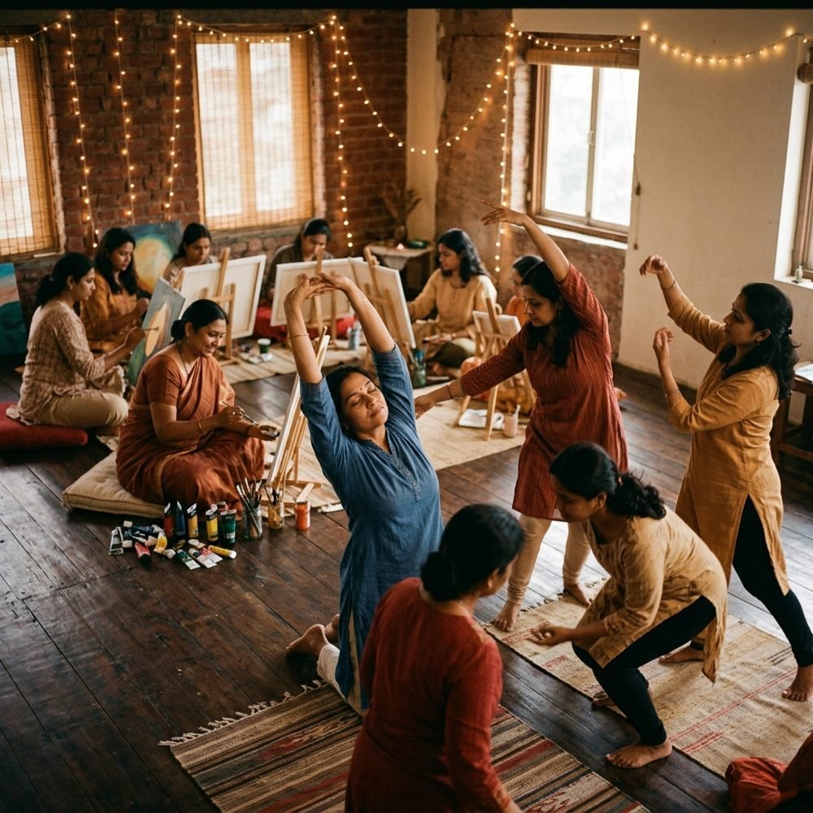

We believe that the rules handed down to women—be polite, stay small, heal in quiet chambers, compete with one another—are obsolete. It's time to build a new code.
"We didn't come here to ask for permission, to fit into a cage, or to dim our light so others feel comfortable. We came to breathe freely, heal out loud, and write our own rules."
These are the cultural expectations we are actively discarding, and what we choose to replace them with.
We practice these rules at every meetup, workshop, and conversation. Join the circle and feel the shift yourself.
